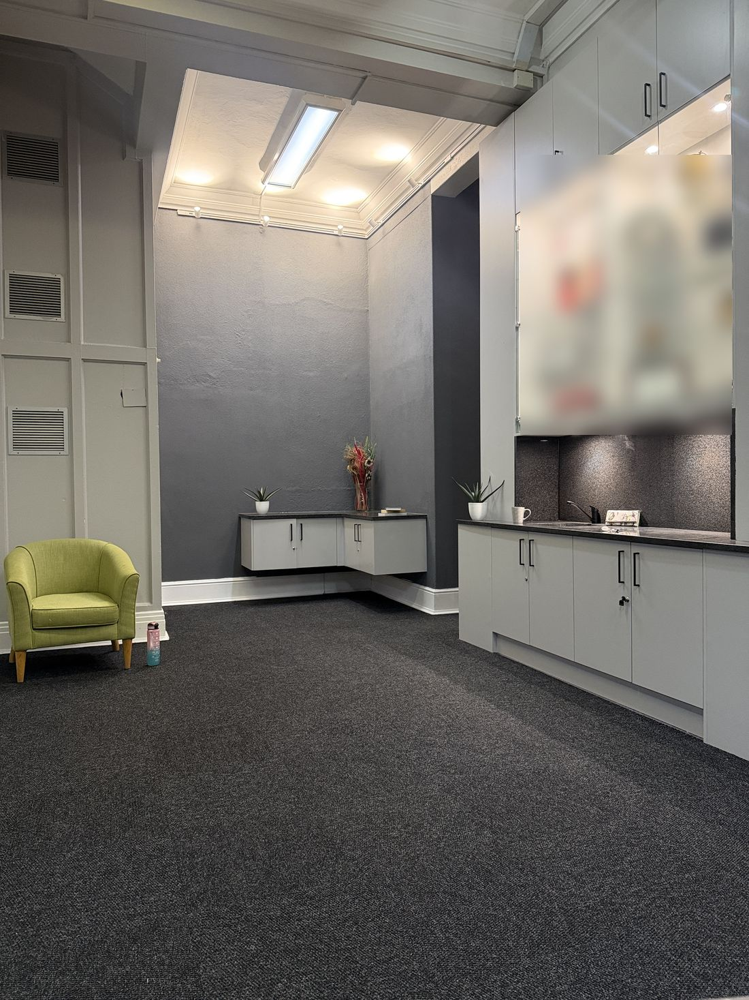

Did I lose it here, or there?
We built a phone camera that remembers where you last left your things, and tested it on photos it had never seen.
The problem
Gogo has low vision. She asks, “Where are my keys?” A phone on a stand answers out loud: “Your keys were on the armchair until 2:32 pm.”
People with visual impairments search for misplaced things every day. Most tools that could help need an internet connection, cloud models or expensive wearable cameras. We wanted something that works on a cheap phone, without internet, and keeps the photos on the device.
Our question: can a small model, looking at one photo every 30 seconds from a fixed camera, say which of 8 zones in a room an object was last seen in, and when it disappeared? And can it say “not seen” when it has not seen the object?
The system gives one of three answers: visible now in a zone, last seen in a zone at a time, or not seen.
What already exists. Find My Things (Morrison et al., 2023) recognises a user’s own objects, but only the ones the camera is pointing at right now. GO-Finder (Yagi et al., 2021), MemPal (Maniar et al., 2025) and the Ego4D Visual Queries benchmark find where an object was last seen, but they use video from a camera the person wears, and MemPal sends it to cloud models.
What we expected. H1: our system would beat random guessing when objects are in clear view or in their usual place. H2: a simple “usual place” rule would fail when objects are small, hidden or moved somewhere new.
Our data
We recorded our own dataset. A phone on a stand took a photo every 30 seconds. We split the room into 8 zones and used 5 objects: keys, wallet, mug, phone and water bottle.

We also took 207 registration photos of the objects.
- Session 1 (20 photos) was used for training and tuning.
- Session 2 (60 photos) was used only for testing. We made it harder on purpose: the lights go off and on, a person is in 52 of the 60 photos, and objects end up in new places, such as behind the armchair leg or behind a plant.
We labelled every object and person in Roboflow and kept a placement log of where each object was in every photo. To keep the test fair, we never tuned anything on Session 2, we chose the 50 test questions (10 per object) before any model saw Session 2, and each answer only uses photos taken up to the time of the question.
What we tried
Our proposal planned to use a pretrained model with no training: DINOv2 would compare each zone of the photo with the registration photos. It did not work, so we tried other methods. The score is how often each method found the object in the right zone on Session 1.
| Method | Training | Score |
|---|---|---|
| DINOv2, one crop per zone | None | 0% |
| DINOv2 on smaller tiles | None | 8% |
| OWLv2 object detector | None | 36% |
| YOLO11-s | Fine-tuned on Session 1 | 64% |
One of the reasons the first set of methods failed is size. The keys are about 37 × 23 pixels in a 12.2-megapixel photo. When a model shrinks the photo to save computing power, the keys almost disappear. Pick a model below to see the keys at the size each model received them.
The final system
YOLO11-s is a small detector with 9.4 million parameters. We cut each photo into 640-pixel tiles so small objects keep their full detail. We fine-tuned the model on Session 1 and pasted objects into new places in the training photos, so it learns what the objects look like rather than where they were. The model only reports an object when its confidence is at least 0.63. We chose this threshold on Session 1 and did not change it for the test.
Results
On the 50 test questions from Session 2, our system named the right zone 48% of the time. Random guessing and the “usual place” rule both got 12%.
Results were very different between objects:
| Object | Right zone |
|---|---|
| Water bottle | 9 of 10 |
| Mug | 9 of 10 |
| Phone | 6 of 10 |
| Wallet | 0 of 10 |
| Keys | 0 of 10 |
Almost all mistakes were misses, not wrong places. In the 220 test photos where an object was visible, the system found it in the right zone 74 times, named the wrong zone once, and missed it 145 times. It never reported an object that was not there. For someone who cannot check, “not seen” is safer than being sent to the wrong place.
This supports H1. It also supports H2: the “usual place” rule did no better than chance, because objects moved between sessions.
Why we only report Session 2. Our OWLv2 version ranked the right zone first 89% of the time on Session 1, which we also used to choose its settings. On Session 2 this fell to 10%. Scores on the tuning data can look much better than they really are.
Try it
Move through the 60 real test photos and ask where an object is. You can click an object or ask out loud, and the answer is shown and read out loud.